9人と1匹の
鹿児島・日置
2泊3日旅
「鹿児島、行こうよ」
その一言が生まれたのは、さいたま市大宮区の路地裏にある鉄板焼き店「あいろん亭」のカウンターだった。瀧シェフが鉄板の上でリズムよく食材を躍らせ、香ばしい匂いが店いっぱいに広がる夜。美味しい料理とお酒に心がほどけた頃、誰からともなくそんな話になった。
行き先は鹿児島県日置市。集まったのは、大人6人、子ども3人、そして1匹の猫。
この旅は、観光地を巡った記録というより、「人と人が再び繋がっていく時間」の記録だったのだと思う。
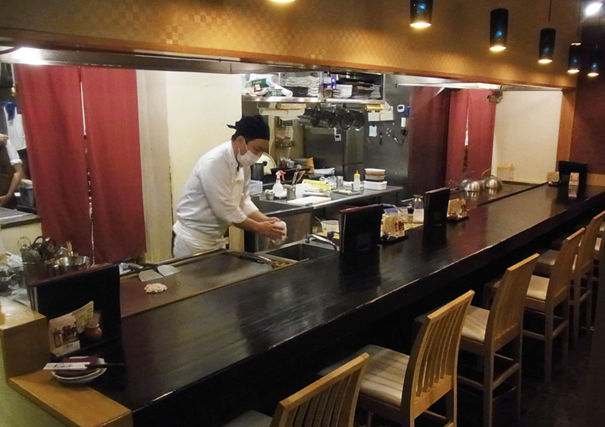
鉄板焼き「あいろん亭」——すべての始まり
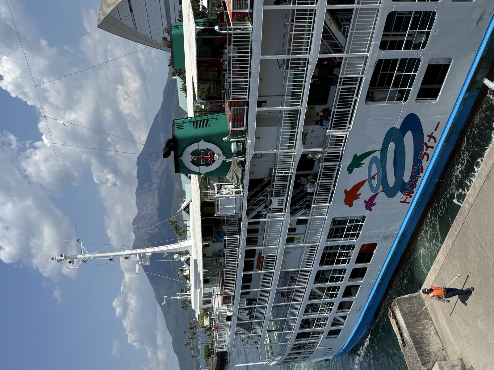
「流されるまま」
で始まった旅
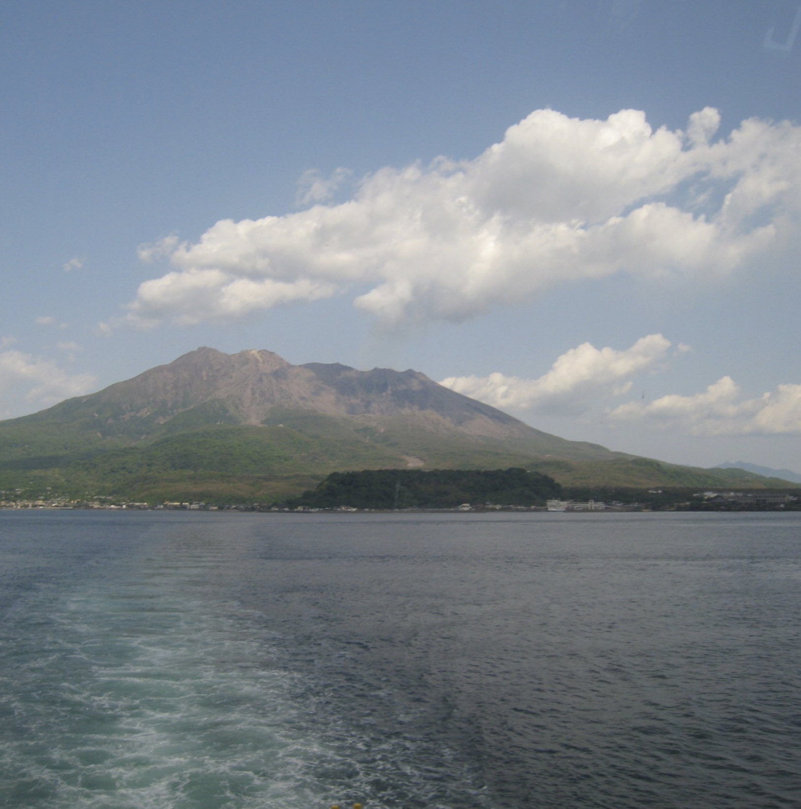
空気が変わった
鹿児島空港に降り立った瞬間、空気が変わった。湿度を含んだ南国の風。どこまでも広い空。埼玉では見ない濃い緑。
「もう空気がおいしい」
今回の旅は、最初から"完璧なスケジュール"を決めていたわけではない。「とりあえず桜島行こうか」「フェリー乗る？」「着いてから考えよう」——そんな温度感だった。
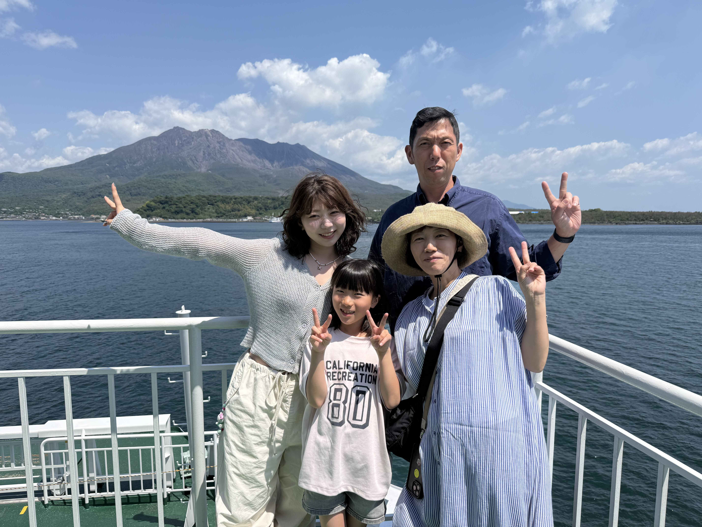
気づけばそのまま車ごとフェリーへ
誘導員さんの鮮やかな手旗に導かれ——「え！？もう乗るの！？決まったの！？」笑っているうちに出港。
予定通りじゃなくていい。
むしろ、流れに身を任せた先に、
一番いい景色が待っていた。
桜島で感じた「地球の力」
黒々とした溶岩。むき出しの岩肌。静かな海。

自然のスケール感に、圧倒される
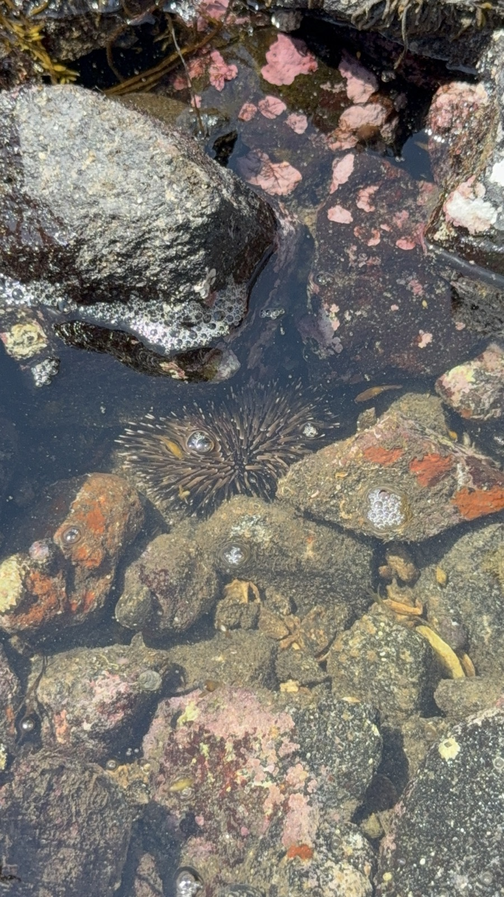
「ウニいる！！！」
岩陰をのぞき込んでいたあおが突然叫んだ。見ると、本当に生きたウニがいる。自然って、ただそこにあるだけで面白い。
「これ無料なの、
意味わからないね」
誰かのその言葉に、全員がうなずいた。
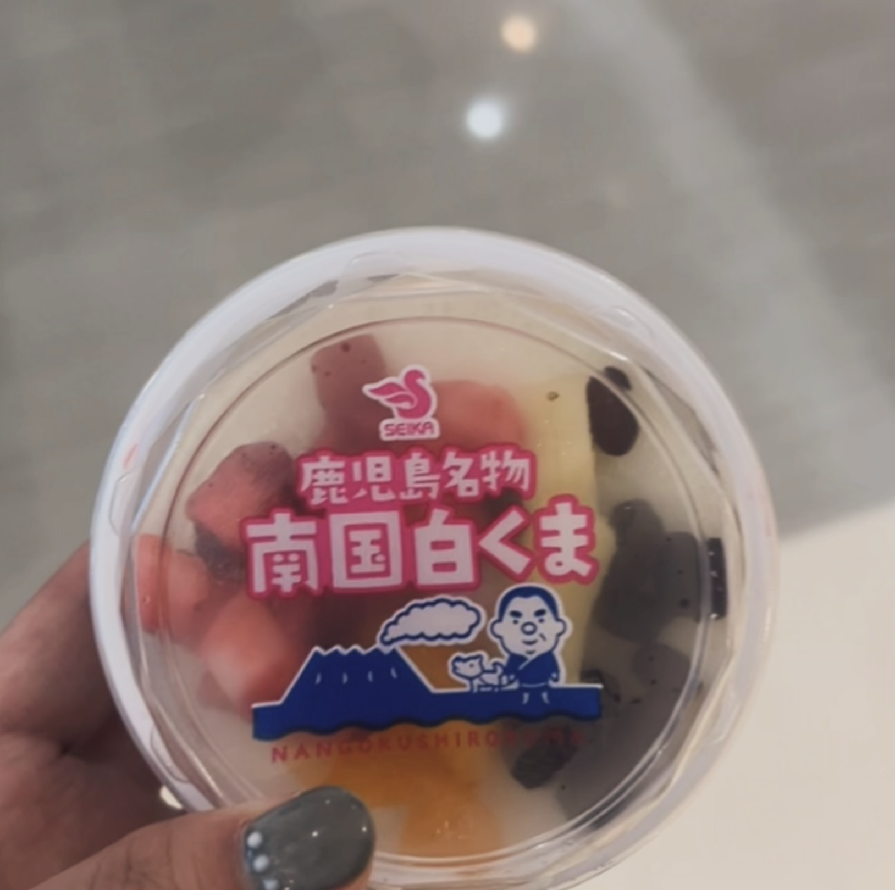

美味しいものを食べると、人は静かになる
しろくまアイス——子どもたちは一瞬で無言に。フェリーのうどんは、景色も含めて"味"だった。

日置で待っていた
「人の温度」
日置へ到着すると、移住組のにわと、みなが迎えてくれた。この二人のホスピタリティが、本当に凄かった。
どこへ行けば一番気持ちいいか。何を食べれば鹿児島を感じられるか。その全部を、まるで自然呼吸みたいに用意してくれる。しかも押し付けがましさが全くない。
気づけば全員が心地よく過ごしていて、「歓迎されている」というより、"もう昔からここにいた"ような感覚になっていく。
この旅は単なる観光旅行ではなく、「誰かの暮らしの中へ入れてもらう旅」になっていた。
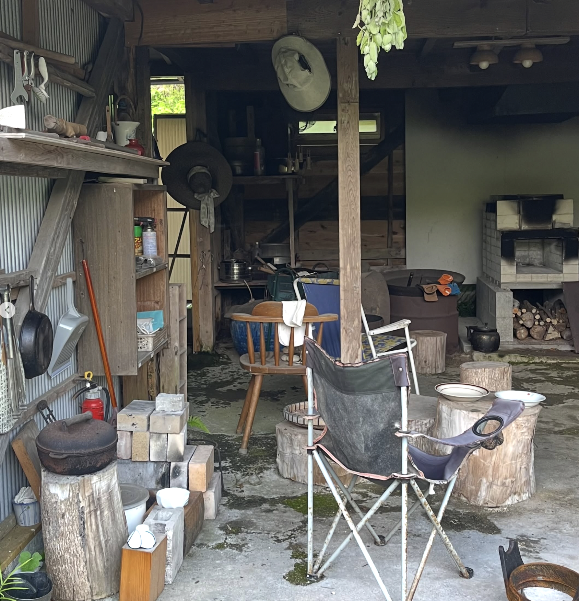

まるで「暮らしそのものが作品」みたいな空間
薪。焼き物。風。猫。全部が自然につながっている。

「え、ぬいぐるみ？」
でも、その目は野生を忘れていない。
近づきすぎない。でも離れすぎもしない。
ミーシャは、大雨の日に保護された猫だった。この家の"空気"そのものみたいだった。


あおとミーシャ、すぐに友達になる
そっと座る。静かに話しかける。気づけば縁側で並んで座っていた。


猫というより、この家の"空気"そのもの


「人生No.1温泉」に出会った夜
森に包まれた静かな空間。工芸品のように美しい建物。聞こえるのはカエルの声。——後に満場一致で認定された。
「あ…やばい」
静かに感動している顔。
黒豚しゃぶしゃぶと、
幻の焼酎
にわが用意してくれた黒豚しゃぶしゃぶ。女将・ひとみさんが届けてくれた地元野菜の料理とみなの漬物。土の香りがする。
「野菜ってこんな味だったっけ？」みんな本気でそう言っていた。
そこへ登場したのが、幻の焼酎「一どん」。その香りに一番テンションが上がっていたのは、たきとけんの二人だった。完全に少年みたいな顔になっている。
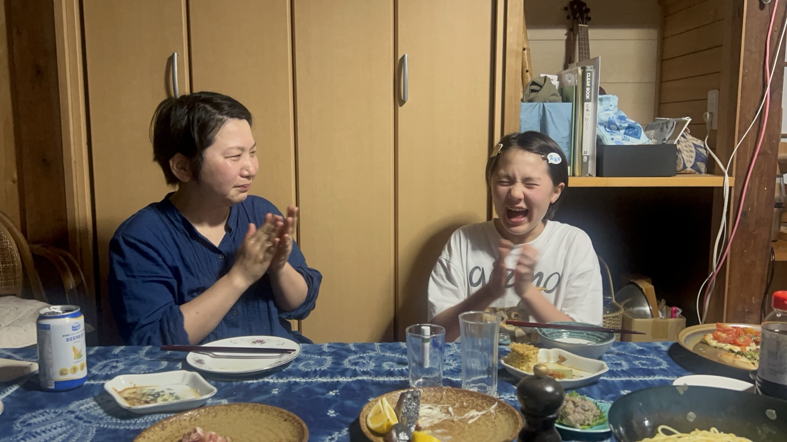
にわの15年が詰まった一皿
しんは鳥刺しに魂を奪われ、大人が残した皿まで美しく平らげた。

「これはやばい」「うわ、香りすご…」
こういう"好きなものに夢中になる大人"がいる旅は、やっぱり楽しい。
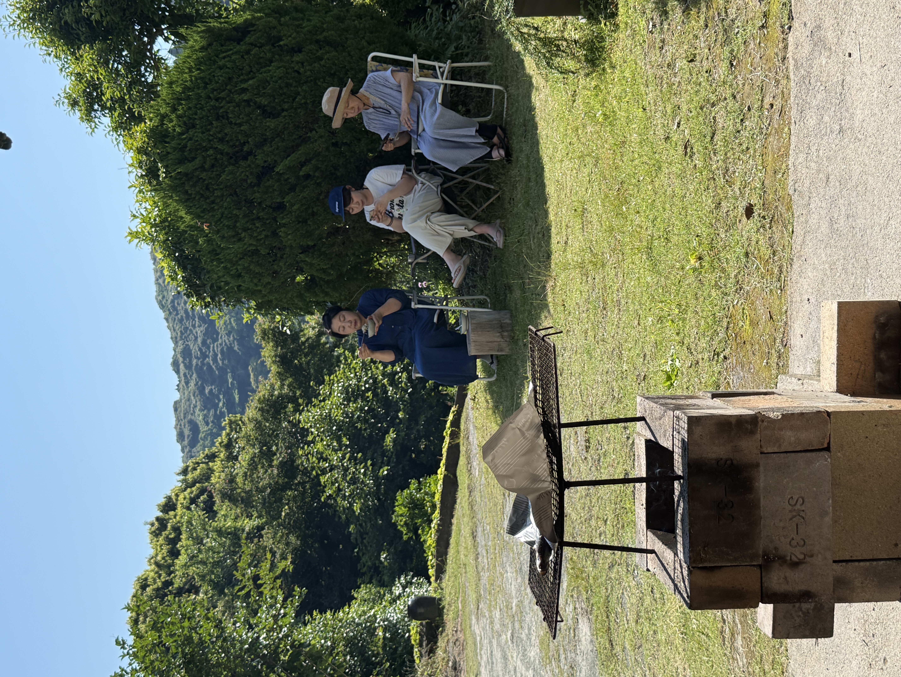
焚き火の音で
始まる朝

朝から優勝だった
前夜のしゃぶしゃぶの出汁で作った雑炊。江口蓬莱館のトロアジ・トロサバ干物。そしてマチュピチュ産の自家焙煎コーヒー。
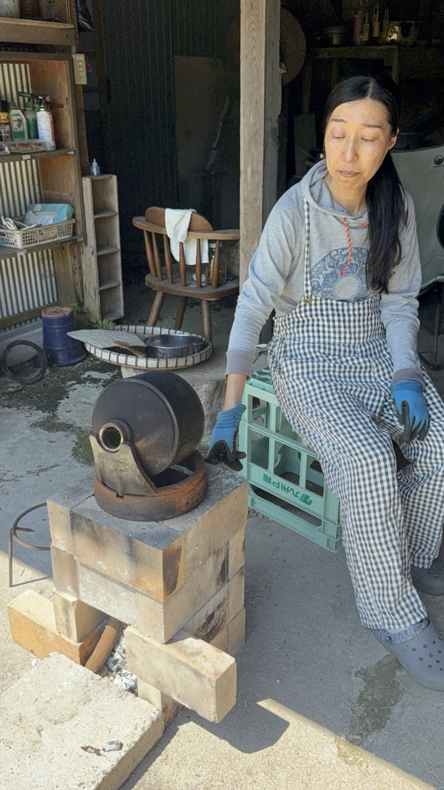
色が変わり、香りが変わり、音が変わる


器は全部違う作家物。カップを選ぶ時間まで楽しい。

「グリル、穴空いてる…」
夕方、BBQの準備中に事件が起きる。寿命だった。「終わった…」
ところがここで、にわの地元ネットワークが炸裂する。知人の千代子さんへ相談すると、その息子の"かっちゃん"が軽トラで予備グリルを届けてくれたのだ。早い。優しい。そして距離感が近い。
軽トラの荷台には、当然のようにミーシャ。風を受けながら、堂々としている。「あれ絶対、現場監督じゃん」全員爆笑だった。
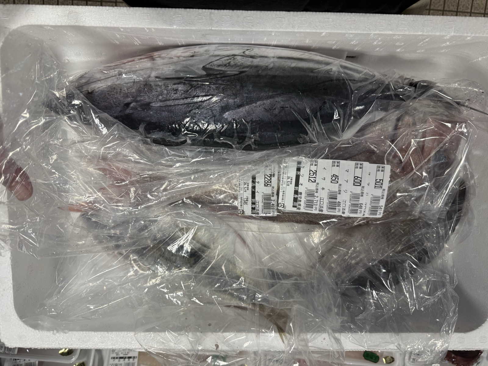
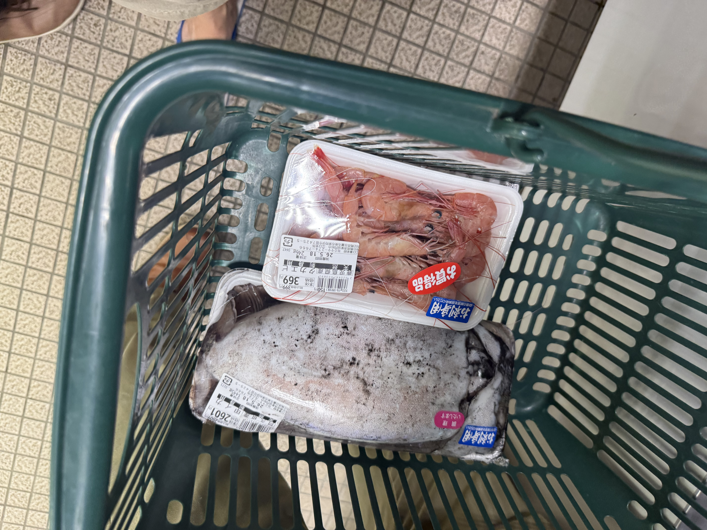

瀧シェフ合流。「今夜は絶対すごいことになる」という空気に
鯛・炙りカツオ・マアジ・イサキ・コウイカ・タカエビ。たきの目が完全に料理人の目になっていた。
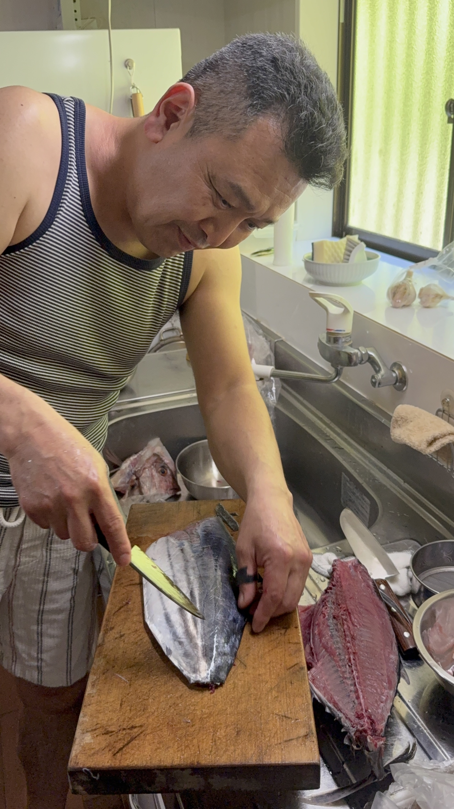

台所は本格的な戦場になっていた


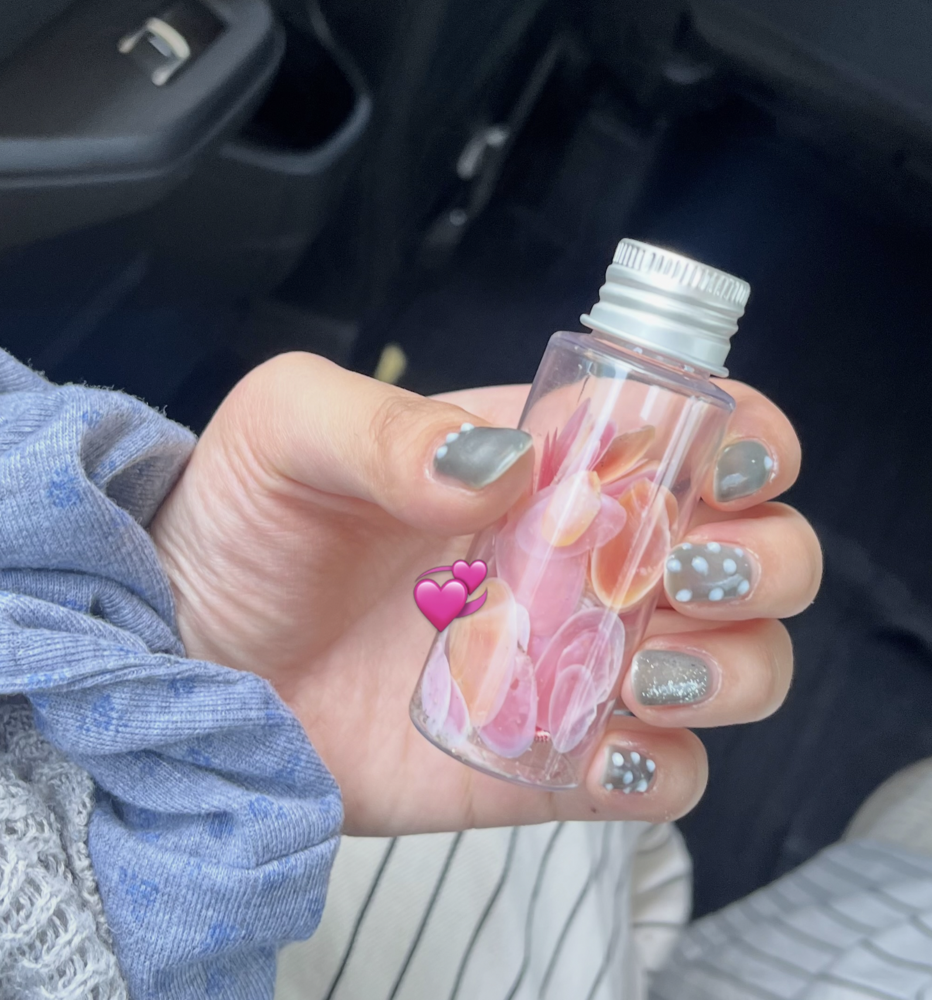
仕込み班が汗をかいている頃、子どもたちは江口の浜でキラキラしていた
桜貝拾い、海水浴。「これハートみたい！」大人にとっては小さな貝でも、子どもにとっては宝物だ。

「最後の一個のマンゴー」——まるでRPGのレアアイテム発見
完熟マンゴーが残り一個。これを翌朝に食べることになるとは、この時はまだ知らない。
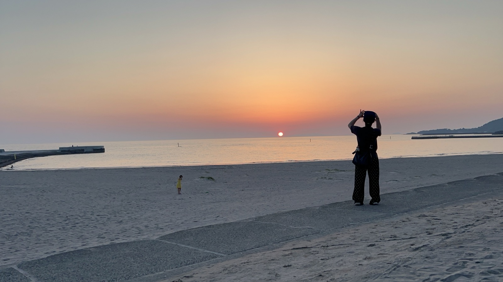
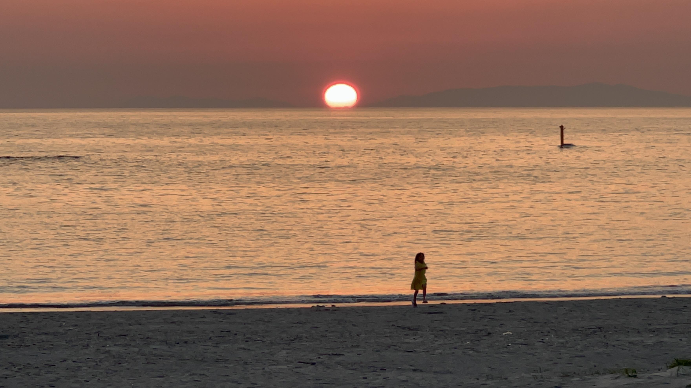
江口海浜公園、奇跡みたいな夕日
水平線へ沈む濃いオレンジ色の太陽。空も海も全部オレンジに染まっていく。みんな自然と無言になっていた。
たぶん、「綺麗」だけじゃ
足りなかった。

完全に宴だった
鯛、炙りカツオ、マアジ、イサキ、コウイカ、タカエビ。刺身盛りだけで歓声が上がる。そこへ、みな特製の「二番醤油」。再仕込み醤油ならではの濃厚なコクが、魚の甘みを何倍にも引き上げる。
さらに薪窯ピザ、炭火でメヒカリ・黒豚・地鶏、採れたてコーン、ホクホクのジャガバター、そして締めのアルデンテのペペロンチーノ。ひとみさん特製の愛情たっぷりデコレーションケーキ。
「一どん」「天狗桜」「村尾」という幻級焼酎まで並ぶ。完全に宴だった。
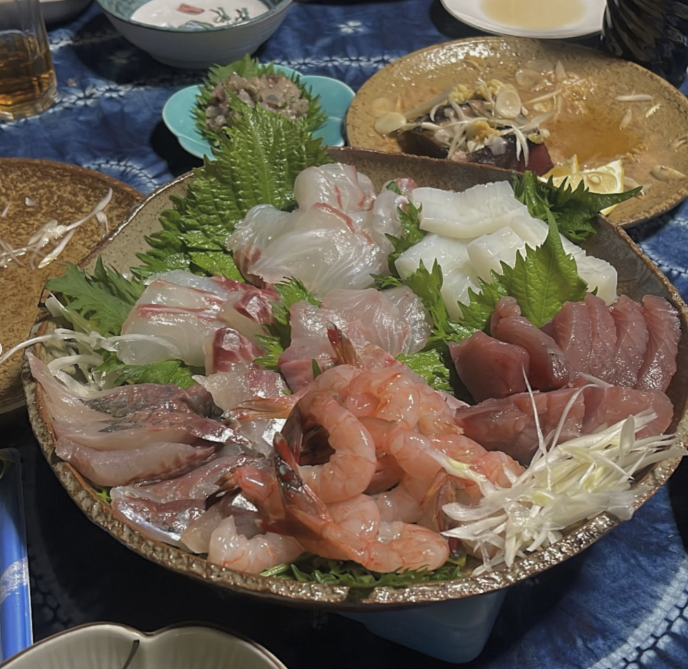
刺身盛りだけで歓声が上がる
みな特製「二番醤油」——再仕込み醤油ならではの濃厚なコクが、魚の甘みを何倍にも引き上げる。


たき・そら・しん、生地をこねる
マルゲリータとしらすピザ。窯に火が入ると、夜の庭に香ばしい匂いが広がった。


炎の前では、みんなの顔が温かいオレンジ色に染まった
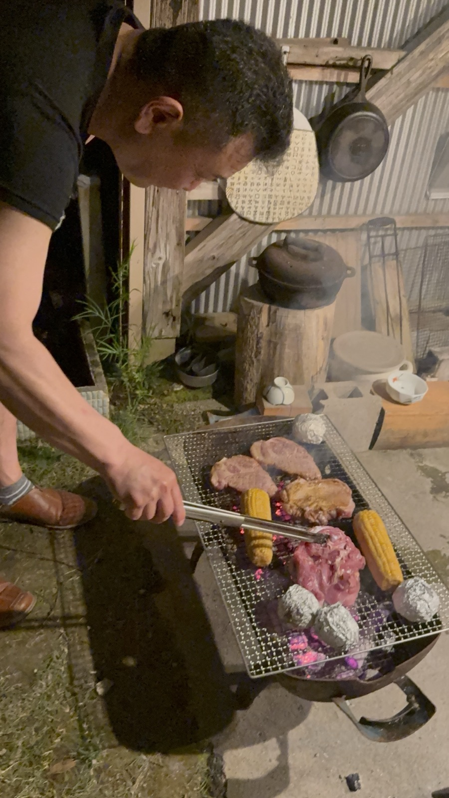
黒豚。地鶏。メヒカリ。コーン。ジャガバター。

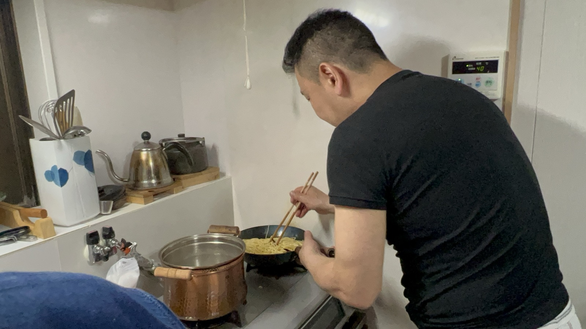

笑い声。話し声。グラスの音。焚き火の匂い。
その横でミーシャは、焼き魚の香りに少し反応しながら、優雅に毛づくろい。"この宴に慣れている猫"だった。
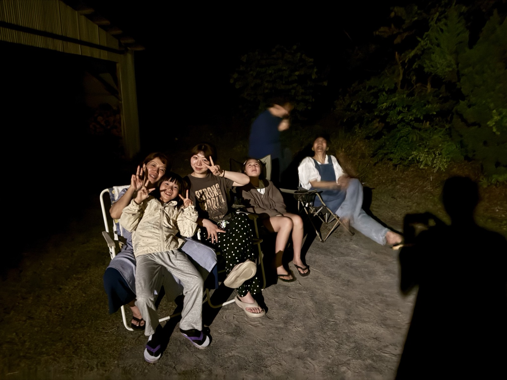
星空の下で感じた
「大丈夫」
夜はブルーシートを広げ、みんなで星空を見上げた。初日にみなとけんが見た流れ星の話をしながら、花火をする。笑い声。波の音。焚き火の匂い。そして、暗闇の向こうを歩くミーシャの気配。
その空間には、「大丈夫」という空気が流れていた。このメンバーなら大丈夫。この時間は大丈夫。人生って、案外大丈夫かもしれない。

深夜、パトロールを終えたミーシャが帰宅し、縁側で丸くなる
「今日も平和だね」——そう言っているみたいだった。

美山と、
旅の続きを持ち帰る

残った刺身で作る、贅沢な漬け茶漬け
しんちゃんが鮮やかに切り分けた完熟マンゴー。帰る日なのに、時間だけゆっくり流れていた。


シール交換。最後の貝拾い。旅の最後まで全力で遊んでいる。

器を買うというより、"旅の記憶を持ち帰る"感覚
瀧シェフが30年使えるステーキ皿を真剣に吟味している姿が印象的だった。


「また来ようね」ではなく、「次いつ来る？」という会話になっていた
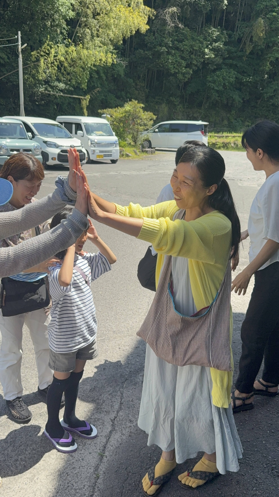
「残念じゃっど」
空港では、にわが持たせてくれた揚げたてのつけあげをつまみに、ビールで乾杯した。別れ際。
「残念じゃっど」——鹿児島弁で、「残念だなぁ」。
でも、その言葉には寂しさだけじゃなく、「また会おう」が入っていた。「もう一つ忘れてたの何だっけ？」そんな会話をしながら、最後まで笑っていた。


その笑顔の裏には、「また会える」がちゃんとある

つけあげ × ビール × しろくまアイス——最後の最後まで鹿児島を味わい尽くす
旅で一番大切なのは、
人だった
旅が終わったあと、LINEにはこんな言葉が並んでいた。
「場所も良かった。でも、人なんだよね」
絶景も。温泉も。料理も。全部最高だった。でも一番心に残ったのは、人の温度だった。誰かが薪をくべ、誰かが料理を作り、誰かが笑い、ミーシャが自由に庭を歩いている。その何気ない時間が、どうしようもなく幸せだった。
日置の風。焚き火の匂い。器の重み。そして、夜の庭を静かに歩くミーシャの姿。その全部を胸に、私たちはまた、それぞれの日常へ戻っていった。
「残念じゃっど」
その言葉の裏には、
「また会える」がちゃんとある。
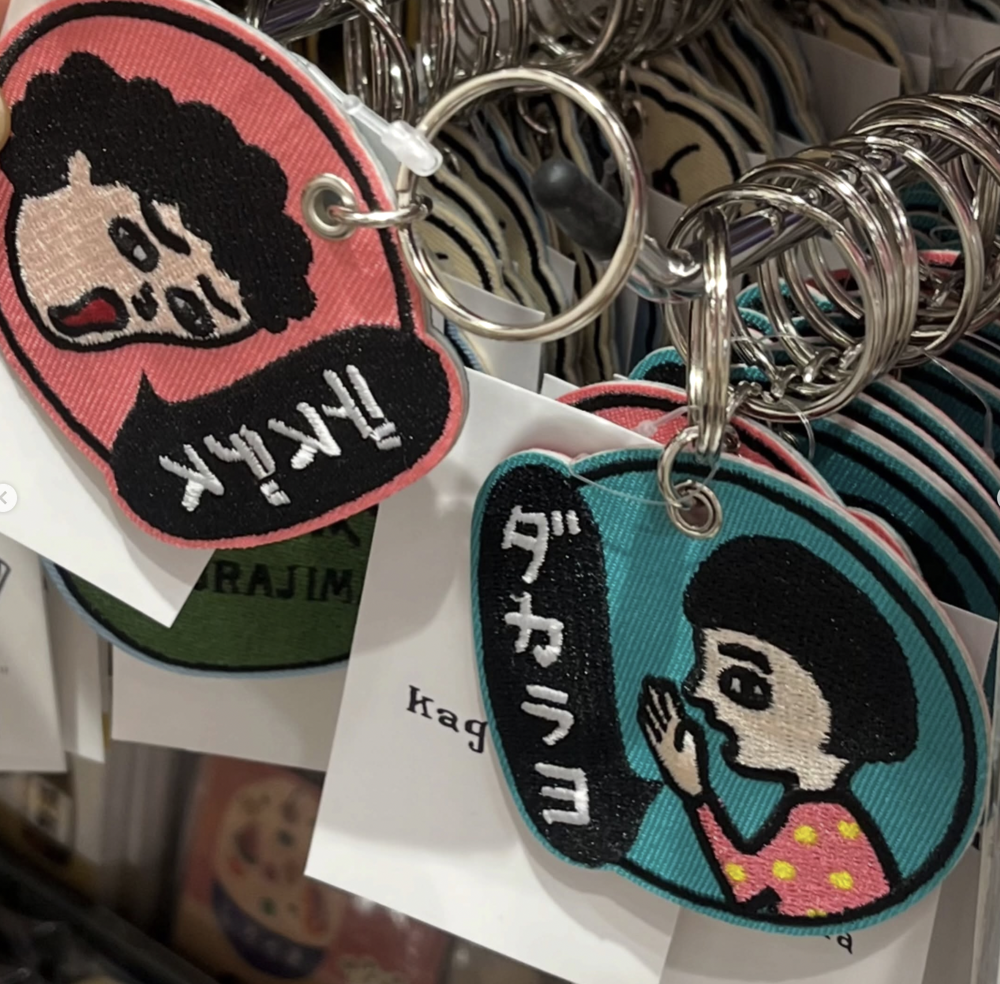